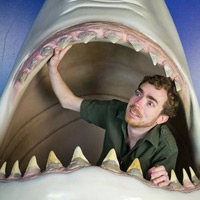

I design.
I develop. I obsess over the user experience and I always sweat the details. I relish every opportunity to build something beautifully functional.
I began my career working with the team behind the United States Army's homepage, Army.mil, where I worked my way up to the position of Creative Director. In the spring of 2012, I moved on to take on a new challenge as the Senior User Experience Designer at U.S. News & World Report.
After a couple years of design at U.S. News followed by a brief but invaluable gig as a Front-End Developer, in 2014 I was approached with the unique opportunity to work at Gannett as the Senior Designer for their custom content management system. This work is not yet documented in this portfolio.
Also please note that this portfolio is quite a few years old at this point... it was mostly designed and built back in 2012!
My name is Patrick.

I'm just a guy living in Arlington, Virginia, making a living doing the kind of work I love. I've been working professionally as a web designer in the DC area since graduating from James Madison University's School of Media Arts & Design in 2006.
When I'm not busy designing things, you might find me watching a classic Kung Fu film, attempting to play guitar, leaning on the 9:30 Club balcony rail, attending Refresh DC, or perfecting my D20 rolls. Steam Sales are my favorite holidays and Alan Moore is my favorite writer next to Kurt Vonnegut and the people who write the ads about the man language professors hate. If only we could all learn his one weird trick!
But seriously, I love videogames, board games, tabletop roleplaying games, game games, mirrorless cameras, comic books, pulpy sci-fi, spaghetti westerns, obscure music, popular music, surprising history, and much more than I could reasonably list in this space.
Would you like to know more? Contact me using the form below, or send me a message via LinkedIn, Facebook, Twitter, or Google+. I'm friendly.